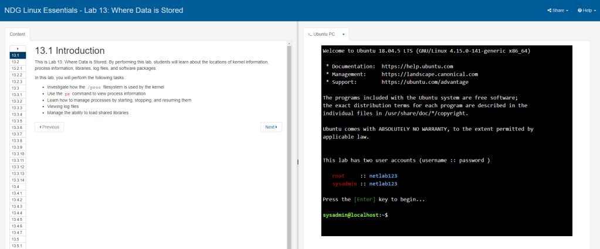

Linux Essentials
ITEC 1018
Overview:
In this class we used Cisco Networking Academy to learn how to use shells to access and manipulate Linux. We also learned the purpose of Linux and what could be accomplished through using it.
Examples of Course Work:
Lessons consisted of reading about how the different shells worked and then applying that information in the course labs. Where we would practice on a virtual Linux server.
Course reflection:
This was one of the tougher courses. Linux is one of the hardest programs to work with and I struggled my fare share. However, it was really satisfying to learn and opened up all sorts of new opportunities on the uses of software.